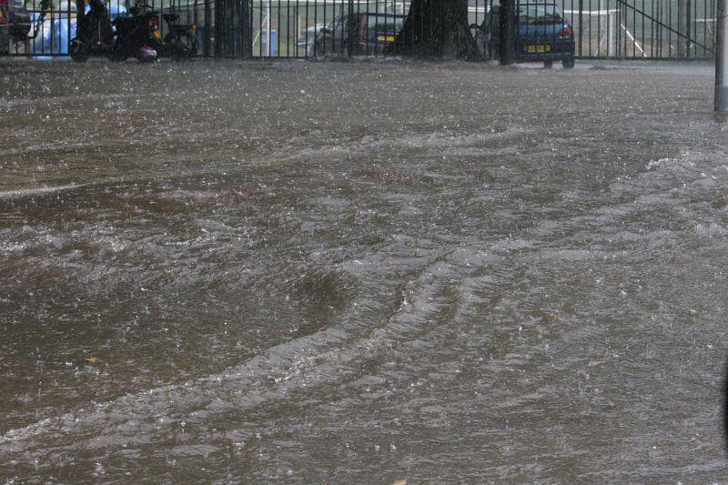
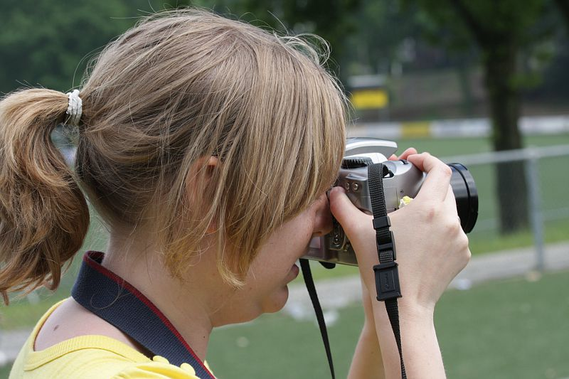
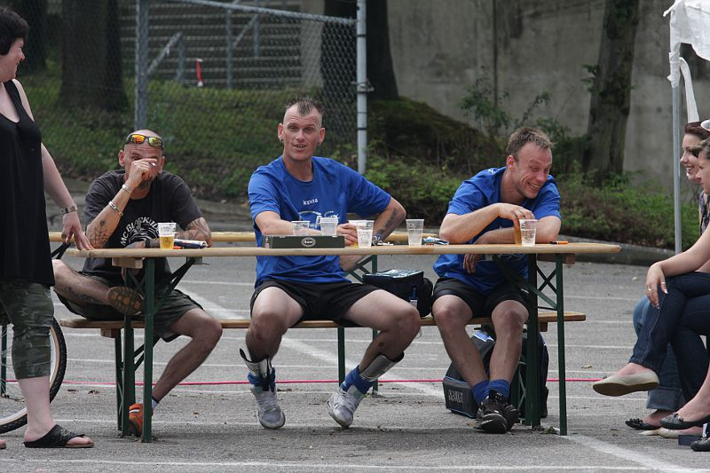

|
FP
SUPPORTERSVOETBALTOERNOOI 2010 |

Het aanvankelijk zeer zonnige weer maakte rond drie uur plaats voor een
gigantische moesson-regen.
De regenpijpen van het oude stadion houden de waterstroom niet meer bij. Ter
hoogte van de tap stijgt het waterpeil tot 25 cm en in de
kleedruimtes komt het water door de plafonds.
Gelbe Teufel in actie tegen FP team.
WSU2 speelt zich naar een finale-plaats.
Langs de lijn.
Harry Vermeulen aan de pauze-pils.
Toeschouwers bij de finalewedstrijd.

Camera-maedje.
Game over. Heilust 2 wint het toernooi.
Mmmm...
Ludo bereidt zich voor op de prijsuitreiking.

Geen prijs voor deze man. Hij heeft al goud genoeg.
Ceremonieel medewerker Ad en camera-maedje-assistent Ramon.
Oud-Rodaspeler Michel Haan overhandigt de tweede prijs aan de aanvoerder van
WSU-2.
De moeder van Harry Vermeulen puunt de aanvoerder van toernooiwinnaar Heilust
2.

WSU 2 eindigde als tweede en Gelbe Teufel als derde.
Groepsfoto